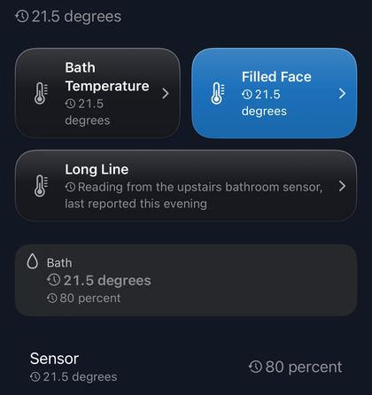
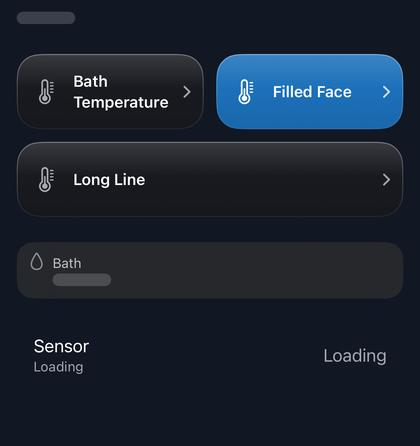
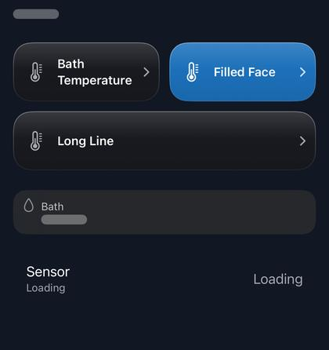
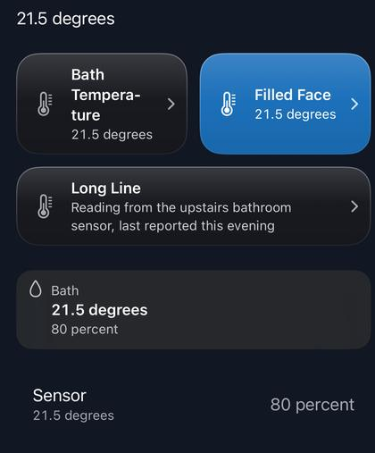
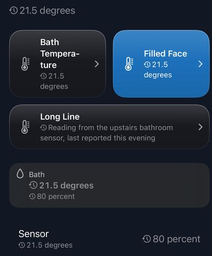
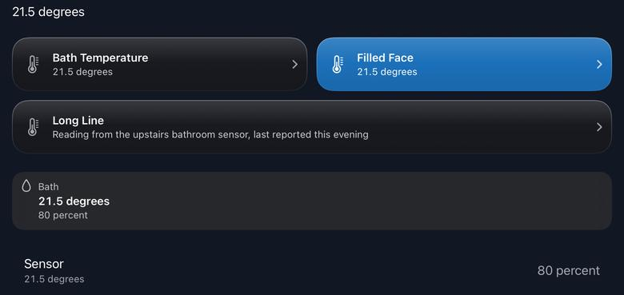
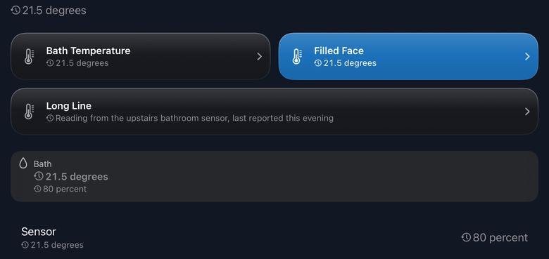
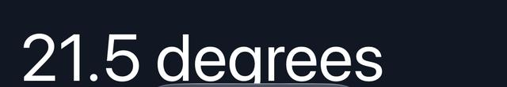

Proposal · 2026-11-19 · parked for the owner · T-text-keep · branch claude/text-keep
Kept text: how a last-known value looks and sounds
The Studio can now ask a text slot to keep its last reading when the sensor behind it goes unavailable (sh.text-keep@1). The engine part is settled; what is not is whether you can tell a kept reading from a live one. Three treatments are built behind one switch and captured on iPhone, Duo and iPad. The app-UI gate parked this one (it could not confirm the treatment matches your request), so nothing is picked: you choose A, B or C.
Your question
"The visible question: while a slot is showing a kept value because the source is unavailable, does it look different from a live value, and how? Examples: no difference, a subtle staleness treatment, or an accessibility-only cue in the VoiceOver value or hint."
The contract (same in every option)
- Keep. A slot with
whenUnavailable: "keep"whose source reads unavailable after at least one answer keeps drawing that last answer. Only this state ("kept") differs between A, B and C. - Loading keeps already. A reconnect or a cold launch from the snapshot keeps the last text under both policies, with no cue in any option, so reopening never flashes a mark (no reload on reopen).
- Before an answer. Unavailable with nothing kept yet draws the slot's fallback (
"No reading"in the fixture) or the usual empty text, as today. No cue. - Fallback or omitted policy. Today's behaviour: the slot shows its unavailable text.
- Recover. Kept back to live drops any mark in the same frame; no animation, no announcement.
The three options
A · Plain
no differenceKept draws and speaks exactly like live. No glyph, no colour, no VoiceOver change.
- You notice: nothing, ever. A frozen sensor reads as current until it answers again.
- Cost: lowest. No view code beyond the engine.
- Risk: a reading hours old is shown as fact, to everyone. Staleness is visible only in the Studio.
- HIG: Loading, "Show something quickly"; no staleness signal at all.
B · Spoken
accessibility-only cueLooks exactly like A. VoiceOver appends ", last known" to the element's value, once per element however many slots are kept.
- You notice: nothing by sight; with VoiceOver, "last known" after a stale reading.
- Cost: low. Value composition in tile, chip, row and text hosts; announcements compare values with the cue stripped.
- Risk: VoiceOver users learn something sighted users cannot see.
- HIG: VoiceOver, "keep labels current as interface and content change". Cue in the value, not the hint: hints describe actions and can be turned off.
C · Marked
subtle staleness + B's cueKept text gains a leading clock.arrow.circlepath glyph (scales with the text, hidden from VoiceOver) and, where the live ink is a neutral, steps to the grey unavailable tiles already use. On a filled or tinted ground the ink stays and the glyph alone marks it. Plus B's spoken cue.
- You notice: when a sensor drops, its readings turn grey with a small clock-arrow; an HA restart can mark many at once, then clear together.
- Cost: highest. Attributed text in four hosts, an ink map, an Increase Contrast branch, AX5 and layout tests on three families.
- Risk: narrow tiles grow a line when kept (seen below); page-wide marking during HA restarts; a new glyph meaning app-wide.
- HIG: Color, "Avoid relying solely on color ... also convey it another way, like text labels or glyph shapes"; Accessibility, "Convey state and function with shapes or icons in addition to color"; Labels, tertiary for "an unavailable item".
iPhone, default text: live and kept
A and B kept are pixel-identical to live (same image hash for live, A kept, B kept and C recovered), so one picture stands for all four.


Loading and before an answer (all options)


Duo and iPad (C against live)




AX5 (C only; A and B draw as live)

The long-text host
"Reading from the upstairs bathroom sensor, last reported this evening" wraps to two lines live and kept under C on iPhone, Duo folded and iPad portrait: the leading glyph adds width but no extra line or truncation here. A and B: unchanged. The single-line subtitle host (truncates at 85% shrink) was not in the fixture, so whether C truncates it earlier is unmeasured.
What VoiceOver says
From the spec and the tests' asserted cue counts (no accessibility tree dumps exist for these runs, so the label and value wording below is the designed reading, not a recording): A has zero cues anywhere; B and C exactly one per kept element, and none when live, loading, recovered or before an answer.
| Host | Live, A kept, any loading or before | B or C kept |
|---|---|---|
| Text node | "21.5 degrees" | "21.5 degrees, last known" |
| Tile (Bath Temperature, button) | "Bath Temperature, 21.5 degrees" | "Bath Temperature, 21.5 degrees, last known" |
| Status chip (two kept slots) | "Bath, 21.5 degrees, 80 percent" | "Bath, 21.5 degrees, 80 percent, last known" (one cue, not two) |
| Row (title and detail in the label) | "Sensor, 21.5 degrees", value "80 percent" | value "80 percent, last known" |
| Authored spoken value | "on, off in 12 minutes, locked" | "on, off in 12 minutes, locked, last known" (appended, never replaced; not in the fixture) |
Moving between live and kept never announces (the text did not change); a real change while kept still announces under valueChange, with the cue.
Evidence and its gaps
| Family and pose | A | B | C | Note |
|---|---|---|---|---|
| iPhone portrait | default | default | default, AX5, contrast | 5 journey tests pass |
| Duo folded | default | default | default, AX5, contrast | outer panel |
| Duo unfolded portrait, landscape, partial fold | not run | not run | not run | infra: the run came back folded, twice |
| iPad portrait | default | default | default, AX5, contrast | |
| iPad landscape | default | default | default, AX5, contrast | captures rotated 90 degrees |
| Rotate-in, rotate-out | not run | not run | not run | no rotating journey on this surface |
- A and B at AX5 not run. They draw as live, so the risk is low, but it is unobserved.
- C grey on tile fills not measured. On the page ground it is 5.5:1 (#8E8E93 on the dark page); the off-tile fill is lighter, so the ratio there is lower and unknown. Light sheets (#636366) not captured.
- Before-answer not shown. The "before" captures match loading; the fallback text never appears, so that state is asserted only by cue counts, not seen.
- C grows narrow tiles. On iPhone and Duo folded, "21.5 degrees" wraps when the glyph is added, so short two-column tiles gain a line when a sensor drops and lose it on recovery. iPad portrait does not.
- Not in the fixture: a tinted chip, a numeric count badge, a sheet row on a light sheet, an authored spoken value, a single-line truncating subtitle; no accessibility tree dumps.
Your call
When a sensor goes unavailable and a slot keeps its last reading, should it:
A look and sound exactly live; B look live but say "last known" to VoiceOver; or C turn grey with a small clock-arrow (text on coloured tiles keeps its colour) and say "last known"?
The other two are removed once you pick. If C, the narrow-tile growth and the missing Duo unfolded and contrast-on-tile measurements are checked before it ships.
Designer's lean, advisory; the owner picks: C, because a reading that may be hours old should not look current to anyone, and C reuses the grey the app already gives unavailable tiles with a glyph so it never relies on colour alone; B is the safe second if narrow tiles growing a line, or the page-wide marking during an HA restart, is not acceptable.